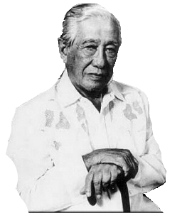

What We Are
The Free Legal Assistance Group (FLAG) is
the largest group of human rights lawyers in
the Philippines. Among its many advocacies
are those against political repression,
military and police abuses, death penalty,
extra-judicial killings, and the current bloody
war on drugs.
We are committed to the protection and promotion of human rights and civil liberties. FLAG works to help excluded and vilified individuals secure legal documents pertaining to citizenship, land ownership, health, and communal development. It aspires to deepen democracy and transform institutions.
History
Lorenzo Tañada
FLAG was founded in 1974 by Sen. Jose W. Diokno, Sen. Lorenzo M. Tañada and Atty. Joker Arroyo - two years after the 1972 proclamation of Martial law under Ferdinand Marcos.
Diokno created the law firm right after being released from 718 days as the Marcos administration's political prisoner, as a means of supporting human rights victims through a new and innovative method called developmental legal aid.
During the dictatorship, FLAG defended farmers and activists who were victims of paramilitary abuses, with Diokno helped even further by giving allowances to clients without any financial means.
FLAG's activities sometimes placed lawyers working with them at risk. Numerous FLAG lawyers were murdered during the dictatorship, all of them honored in the Bantayog ng Mga Bayani today.